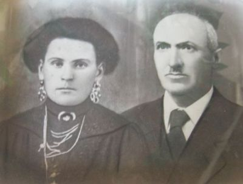

Quercegrossa (Ricordi e memorie)
CAPITOLO II - FAMIGLIE DEL '900
Indice dei Capitoli
Indice Famiglie del '900
SBARDELLATI (1930-1931); mezzadri; Quercegrossa.
Brevissima e anonima permanenza a Quercegrossa di Modesto Sbardellati abitante al podere di Giotto in Quercegrossa nell’anno 1930, tra la partenza dei Palazzi a febbraio e l’arrivo dei Manganelli il 25 febbraio 1931.
SEMPLICI (1884-1907) mezzadri; Casagrande di Petroio.
La loro presenza nel popolo di Quercegrossa risale al 1884, al podere Casagrande di Petroio dove rimasero circa ventisei anni. Famiglia di piccole dimensioni, i Semplici, al momento dell’entratura dovevano contare su cinque/sei elementi e la loro permanenza fu caratterizzata dai numerosi decessi che la colpirono nei giovani e negli anziani, e probabilmente la loro partenza fu determinata dalla scomparsa del 21enne Odoardo. Comunque in quel 1884 la famiglia era comandata da Giuseppe, figlio dell’anziano Andrea del fu Gaspero, nato a Castellina che conviveva con i fratelli Pietro, celibe, e Luigi, coniugato con Giuditta Vanni, mamma del piccolo Giulio. Oltre al babbo Andrea del fu Gaspero, vedovo di Margherita Nencini, viveva in famiglia lo zio Pasquale di 65 anni. La permanenza nel nuovo podere era iniziata bene con il matrimonio di Rosa figlia di Andrea che nel 1885 aveva sposato Virgilio Focardi dell’Olmicino e la nascita di Odoardo figlio di Luigi nello stesso anno. Ma nel 1887 morì lo zio Pasquale e l’anno dopo la neonata Giulia. Nacquero poi Pasquale e Giovanni (1891), ma nel 1894 ecco che Pietro annegava a Pietralta "annegato dalla sua pazzia" scriveva don Rigatti, e il 22 settembre il babbo Andrea in età di 81 anni lasciava questo mondo. Nel 1896 nasceva e moriva di pochi giorni Gesuina di Luigi e quattro anni più tardi nasceva Cesare (1900), l’ultimo figlio di Luigi. Ma la tragedia doveva continuare con la morte di Giuditta Vanni forse in quello stesso anno, tanto da costringere Luigi, rimasto senza donne in casa, a prendere pochi mesi dopo per seconda moglie la vedova Cesira Vanni che entrò in casa Semplici portando con sé i figli avuti dal primo matrimonio con Fortunato Vannini, Giulio e Giulia, fanciulli di 9 e 6 anni. Durò poco la loro unione perché Luigi nel 1902 moriva all’età di 47 anni seguito dal fratello Giuseppe, il capoccio, deceduto il 28 ottobre 1904 all’età di 50 anni circa. La nuovamente vedova Cesira si ritrovò con una giovane famiglia formata dal 22enne Giulio di Luigi nuovo capoccio, fresco sposo con Giulia figlia di Cesare Buti, dal 20enne Odoardo e cinque ragazzi. Ma il 10 giugno 1906 anche Odoardo periva all’età di 21 anni e, come detto, ciò può aver causato la partenza della famiglia verso un altro podere lasciando Casagrande agli entranti Auzzi.
SEQUI (1940 - Residenti); mezzadri/possidenti; Magione; dall’Isola d’Arbia.
Da coloni a padroni. Anche i Sequi, come l’altra famiglia Sarchi, quando il dr. Soldatini, proprietario di quelle terre, li interpellò annunciandogli il desiderio di vendergli il podere della Magione, essi non si fecero sfuggire l’occasione e non si tirarono indietro. Con qualche sacrificio divennero proprietari di un bel podere che dal 1967 hanno mantenuto fino ai giorni nostri. Da mezzadri si trasformarono in padroni, "coltivatori diretti”, e continuarono a lavorare i loro campi fino al 1999, l’anno della morte di Faustino. Vennero a Quercia nel 1940 dall’Isola d’Arbia con il capoccio Agostino detto "Gosto"; erano nove in famiglia, sei donne e tre uomini, e si stabilirono nel podere detto Magione I. Agostino del fu Giuseppe era il maggiore dei maschi in casa Sequi, per questo deteneva il comando. Ma era un capoccio democratico e "Gosto era il capofamiglia ma collaboravano nelle decisioni e poi era Fausto che risolveva". La mamma Adele Madiai, vedova di Giuseppe accompagnò i suoi sette figli al nuovo podere dove sarebbe morta alla venerabile età di 93 anni il 28 gennaio 1973. C’era anche la nipotina Anna, figlia di Isola (1911) che si trovava "al servizio". Gli altri fratelli erano: Rosa, la maggiore del 1903, Arduina (1914), Faustino (1920), Severino (1921) e Gina (1924). Tutti, esclusa Anna che era nata a S. Rocco a Pilli, erano venuti al mondo a Lorato, in provincia di Firenze. Da questo posto, intorno al 1923, si devono essere trasferiti nel senese. Dal Quaranta, con la chiamata alle armi di Faustino e Severino, la vita si fece difficile per le donne Sequi alla Magione. Gosto faceva il capoccio e la bella vita con una certa incoscienza: "Gosto andava a Siena dove teneva una donna e mandava le donne di casa a lavorare nei campi. Gosto teneva tutto per sé e li teneva in libretti. Poi tornò Fausto e la situazione cambiò". Ristabilita la normalità, la vita riprese a scorrere normalmente come in tutte le famiglie contadine, con i soliti problemi da risolvere. Ma di quei decenni si pone all’attenzione una particolare e curiosa tendenza di casa Sequi, alla quale non fece eccezione nessuno. Se si esclude la giovane nipote Anna che prese marito un Tozzi, già abitante alla Magione, a 20 anni nel 1950, cioè quattro anni prima della mamma Isolina che sposò nel 1954, e questo è già un avvenimento, si può osservare come i fratelli e sorelle Sequi si siano tutti sposati in età matura: Isolina prese marito a 43 anni (Luigi Pini), Rosa a 41 (Giulio Taliani), Arduina a 31 (Pietro Pizzichi delle Volte), Gina a 26 (Benito Pinassi), Faustino a 39 e Severino a 35. Solo Gosto non prese mai moglie, rimase "pinzo" e sono ancora ricordate le sue famose escursioni a Siena. Mori nel 1985, dopo essersi fatta la fama di gran bevitore. Severino prese in moglie Alduina Ficalbi della Magione nel 1957 e Faustino sposò Gigliola Pierucci nel 1959. Da quest’ultimo matrimonio nacque Laura tuttora presente alla Magione. Rosa, l’anziana primogenita dei Sequi di Lorato, rimasta vedova, aveva fatto ritorno in famiglia per rimanervi fino al 1975, quando partì per l’ultimo viaggio all’età di 72 anni.
In questa foto appaiono componenti di tutte le famiglie della Magione ai primi anni Sessanta: ci sono i Sodini, i Florindi, i Sarchi e i Sequi. La nonna seduta è Adele, vedova di Giuseppe Sequi, con alle spalle Gosto (col cappello), Gigliola e Faustino Sequi. Tra i ragazzi si riconoscono Livio Florindi, dietro la nonna, e, accanto, Rolando Sodini.
SESTINI (1935 - Residenti); mezzadri; Gaggiola/Quetole/Quercegrossa;
da S. Giusto alle Monache.
"Si chiese di rimanere in affitto... a riscatto... niente", e ai Sestini, dopo secoli di vita contadina, non rimase altro che prendere le loro cose e lasciare Gaggiola, proprietà dei Bindi, per inurbarsi in Quercegrossa, andando ad abitare lungo la via principale nel palazzo costruito da poco da Picciola. Si misero a fare il pane, rilevando il forno dai Pucci. Era l’anno 1965. Risaliva a trenta anni prima la loro comparsa a Quercegrossa al podere Gaggiola quando vi giunsero nel 1935 dopo aver vissuto per mezzo secolo nelle terre di Leonina (Sprandole, podere S. Angelo) e S. Giusto alle Monache (podere Pecine sotto Lucignano in Chianti), dopo aver lasciato a fine Ottocento le grete di Torre a Castello nell’ascianese, dove vi sono tracce della loro presenza per tutto quel secolo nel libro dei battesimi di S. Vito in Verzuris. L’antenato più antico conosciuto è Angelo, nato intorno al 1780, marito di Maria Domenica Toti, del quale si conoscono quattro figli: Rosa del 1812, sposata nel 1831 a Niccolò Tognazzi; Assunta del 1814 e sposa di Agostino Valentini; Assunto del 1814, e del primogenito Santi nato nel 1808 che prenderà in moglie Angiola Salviucci e continuerà la stirpe dei Sestini attraverso il nuovo Angelo nato il 16 aprile 1846. Santi e Angiola ebbero in tutto otto figlioli dei quali solo tre raggiunsero l’età adulta ed oltre ad Angelo si ricordano Giuseppe nel 1836 e Agostino nato il 15 agosto 1838 e deceduto il 21 luglio 1876 a 38 anni "colpito da perniciosa". Questi sarà il padre tra l’altro di Emilio futuro capoccio e di Giuseppe l’avo di Marcello Sestini. La vedova di Agostino, Maria Fregoli, rimase in casa Sestini e non passò molto tempo che si risposò col cognato Angelo dell’età di 30 anni, anch’esso vedovo, ed ebbero due figli: Agostino il 9 giugno 1879 e Sallustio il 1 febbraio 1882, colui che porterà la famiglia a Quercegrossa. A questo punto di fine Ottocento, dopo Sallustio cessano del tutto le registrazioni di nati della famiglia Sestini a S. Vito in Verzuris perché Angelo non avrà più figli.

Sallustio Sestini e la moglie Enrichetta.
Sprandole
Dopo pochi anni la famiglia si trasferisce nel popolo di Leonina, alle Sprandole, podere 2° detto S. Angiolo, mentre all’altro podere trovano i Berni, dei quali un ramo vive oggi alle Badesse. In questa famiglia vi troverà moglie Sallustio che in età di 24 anni alla Pieve di S. Bartolomeo Apostolo a Leonina sposerà il 27 settembre 1906 la fanciulla Enrichetta Berni del fu Antonio di 17 anni “Entrambi di questa pieve”, specifica il parroco. Nel frattempo si registrano in casa Sestini le morti di Alfredo, figlio di Agostino di anni 4, il 10 aprile del 1919 "morto improvvisamente", e dell’anziano Angelo, il 7 gennaio successivo. Angelo chiuse "dopo breve malattia", la sua vita terrena che il parroco trascrisse con una curiosa nota: "Non gli fu amministrato nessun sacramento, perché in seguito a repentino peggioramento morì quasi improvvisamente senza essere stati in tempo a chiamarmi per causa della notte e della pioggia interrotta che impediva il passaggio dei torrenti straripati, alle tre di notte in età di 74 anni. Sacerdote Antonio Nonni". Nel 1902 alle Sprandole erano dodici nella famiglia guidata da Angelo ma formata per la metà da Giuseppe di Agostino con la moglie Argentina Brizzi ei figli Attilio, Cesare, Sabatino e Angela. Giuseppe lascerà la famiglia in epoca imprecisata e lo rivedremo nel comune di Castelnuovo B.ga nel marzo 1922 in un podere presso S. Piero dove sono registrati lo stesso Giuseppe ormai vedovo, il figlio Attilio con la nuora Adelaide Ferri e i nipoti Iolanda, Duilio e Delio, e gli altri figli Sabatino, Angela, Maria e Cesare. Quest’ultimo giungerà a Quercegrossa in tempi abbastanza recenti andando ad abitare col figlio Marcello la nuova casa a Macialla. Un decennio dopo, nel 1912, la famiglia, nonostante la partenza di Giuseppe, mantiene sempre le dodici unita per via dei matrimoni di Agostino con Ada Bonucci presa nell’agosto 1904, dalla quale ha avuto Pia, Nello e Pierino, e di Emilio con Zelinda Fabbri che gli ha dato Guido, mentre crescono di numero i figli di Sallustio che ora sono già tre. In quest’anno si registra anche la presenza di due garzone, le sorelle Scarpelli: Argia di 17 anni e Angiolina di 9. Nel 1922 vediamo la famiglia raggiungere venti componenti tra i quali spiccano i nove figlioli di Sallustio. Il capofamiglia è Emilio del fu Agostino, cugino e fratellastro di Sallustio.
Le Pecine
Esaurita l’esperienza alle Sprandole, nel 1926, Sallustio con la sua numerosa prole si trasferisce alle Pecine di S. Giusto alle Monache di Lucignano in Chianti poco sopra Pianella e vi rimane per un decennio. Qui si sposeranno Dante il 27 dicembre del 1934 con Assunta Margiacchi e le sorelle Argia e Genni che mancheranno all’emigrazione a Quercegrossa. Genni, nata il 28 settembre 1912, si sposerà il 10 febbraio 1934 con Adamo Fabbrini e anche lei arriverà a Quercegrossa, ma qualche anno più tardi, al Leccino.
Gaggiola
Dalle Pecine, nel 1935 si muovono per Quercegrossa dove entrano al podere Gaggiola, e vi giungono in dieci col capoccio Sallustio in età di 48 anni, la moglie Enrichetta Berni e i figli Dante (1909) detto “Badoglio”, con la moglie Assunta Margiacchi (1916), Enrico (1910) detto “Parrino”, Annunziata (1914), Brunetta (Bruna) (1916), Pierina (1917), Angiolino (1920) e Bruno (1922).
La trentennale permanenza a Gaggiola vedrà quasi tutti i giovani Sestini sistemarsi eccetto Bruna, che emigrata a Roma a servizio resterà nubile. La prima a sposarsi, dopo poco, fu Pierina che tornò nella vicina Viareggio, moglie di Serafino Landi, il 6 ottobre 1938 all’età di 20 anni. Nel febbraio del ‘40 fu la volta di Enrico che prese moglie alle Tolfe Vittoria o Vittorina della famiglia Vigni, e con lei e il figlio Mario, nato il 9 luglio di quello stesso anno, lascerà Gaggiola nel dopoguerra per insediarsi a Quercegrossa nelle case del Barucci in quella che sarà l’abitazione dei Cappelletti, dove resterà alcuni anni gestendo la Cooperativa prima di emigrare a Siena verso lo Stellino. Alla sua morte sarà sepolto nel cimitero di Quercegrossa. Giunti gli anni di guerra, con gli uomini Sestini tutti arruolati, Bruno trovò il tempo di sposarsi durante una licenza il 7 febbraio del 1943 con Liliana Losi di Quercegrossa e nello stesso anno nasceva Isanna alla quale seguirono Luciana (1948) e Luciano (1952). Rientrati tutti in famiglia, il 30 dicembre 1944 prese moglie Angiolo e anche lui a Quercegrossa sposando Orietta, la figliola di Gino Travagli, e da questo matrimonio nasceranno Sergio (1951), Silvano (1953) e Roberto (1954). Chiuse la serie degli sposalizi Annunziata che il 25 aprile del 1948 in età di 34 anni sposò a Quercegrossa Eugenio Vanni del popolo di S. Leonino. Furono nozze dimesse per la scomparsa del babbo Sallustio deceduto sei mesi prima il 7 novembre del 1947 all’età di 65 anni, che saranno anche gli anni di vita della moglie Enrichetta quando morirà l’8 agosto del 1952. Annunziata andrà ad abitare col marito a Quetole, dove dal 1946 vi si è trasferito il fratello Dante con Assunta e i figli Pieranna (1936), Giulietta (1938) detta “Gioia” e Franco (1946), e dove, nel 1949, si registrerà la nascita di Marino Vanni. Dante Sestini lascerà Quetole nel 1956. La figlia Gioia si sposerà con Benito Giannini di Quercegrossa. Con il sopraggiungere dei nuovi tempi e, come visto, l’impossibilità di restare a Gaggiola, i Sestini nel 1965 cessarono ogni rapporto con la terra e si riciclarono fornai a Quercegrossa i vecchi, mentre i giovani si impiegano in diverse occupazioni dall’industria, ai servizi, all’artigianato e quasi tutti sono rimasti a Quercegrossa con le loro famiglie formate da Isanna con Elio dei Rodani di Poggiobenichi il 5 giugno 1966, Luciana con Mauro Landi, Sergio con Anna Andriolo e Roberto con Emi Fattori. Da ricordare la prematura scomparsa di Silvano il 13 giugno 1997, un amico apprezzato da tutti, e la morte di Angiolo detto Giangio. Bruno, detto ai suoi tempi “Frizzantino” o “Nuvolino”, Liliana e Orietta vivono ancora nella casa di Picciola, oggi di loro proprietà.
SIMONCINI (1913-1926); mezzadri; Poggiobenichi.
Poche notizie di questa famiglia di Poggiobenichi. Di certo c’è che vi abitava fin dal 1913 e che partirono nel marzo del 1926. I dati anagrafici raccolti ci danno i battesimi dei figli di Emilio di Pasquale e di Marianna Provvedi battezzati a Vagliagli: 1913, nasce Anita che morirà nel 1920; 1919, nasce Nello; 1924, nasce Nella. Sempre nel 1913 Maria di Giovanni Battista sposò Pietro Bianciardi di Lilliano. L’ultimo evento della famiglia Simoncini si registrò pochi giorni prima della loro partenza quando il 13 febbraio del 1926 Emilia di Antonio sposò Michele dei Cennini di Monastero. Notevole la composizione della famiglia a quella data: tredici uomini e nove donne. Ad Emilio fu Pasquale, il capofamiglia, si affiancavano i nuclei dei fratelli Giulio e Giovanni Battista. La loro partenza nel marzo del 1926 li vide diretti a Riciano di Monteriggioni. Un altro fratello, Michele del fu Pasquale, abitava in territorio di Basciano.
Inizio pagina
Indice famiglie del '900
Indice dei Capitoli
|